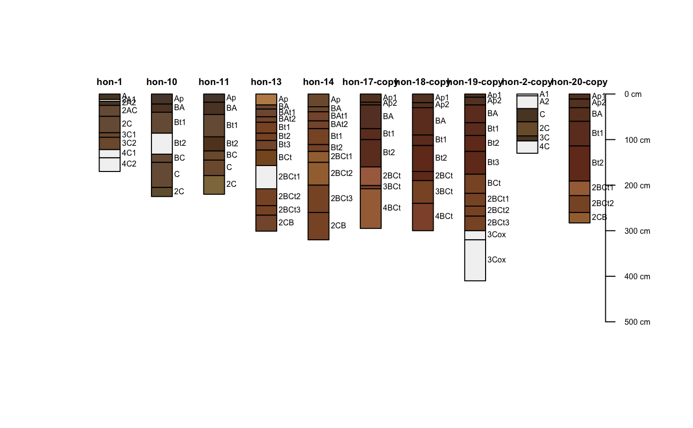

union.RdSafely combine multiple SoilProfileCollection objects that may not share the same internal structure.
union(spc = list(), method = "all", na.rm=TRUE, drop.spatial=FALSE)
| spc | a |
|---|---|
| method | method ("all" or "intersection" [not yet implemented]) used to collect site and horizon level attributes, see details |
| na.rm | remove NA values from |
| drop.spatial | union operation ignores spatial data, useful when only some data have coordinates or incompatible CRS |
Method "all" returns all site and horizon level attributes, padded as needed with NA. Method "intersection" (not yet implemented) returns only those site and horizon level attributes that exist in all objects. Input data must share a common depth unit, and if spatial data are present, a common CRS and coordinate names. In the case of non-conformal @idname and/or @depthcols, the first SoilProfileCollection is used as a template.
Previously, rbind.SoilProfileCollection would remove duplicates. This is no longer performed and an error will be generated due to non-unique profile IDs. NULL list elements are silently dropped.
a new SoilProfileCollection object
#>site(sp2) <- ~ surface # copy pieces x <- sp2[1:5, ] y <- sp2[6:10, ] # reset IDs and combine profile_id(y) <- sprintf("%s-copy", profile_id(y)) # this should work z <- union(list(x,y))#>if (FALSE) { library(plyr) ids <- sprintf("%02d", 1:5) x <- ldply(ids, random_profile, n=c(6, 7, 8), n_prop=1, method='LPP', lpp.a=5, lpp.b=15, lpp.d=5, lpp.e=5, lpp.u=25) # promote to SPC and plot depths(x ) <- id ~ top + bottom plot(x, color='p1') # slice and update IDs y <- slice(x, 0:150 ~ .) profile_id(y) <- sprintf("%s-sliced", profile_id(x)) # stack, note that @horizons is not the same in x and y z <- union(list(x, y)) # label groups z$g <- substr(profile_id(z), 1, 2) par(mar=c(0,0,3,0)) groupedProfilePlot(z, groups = 'g', color='p1', group.name.offset = -10, divide.hz=FALSE, name='') }